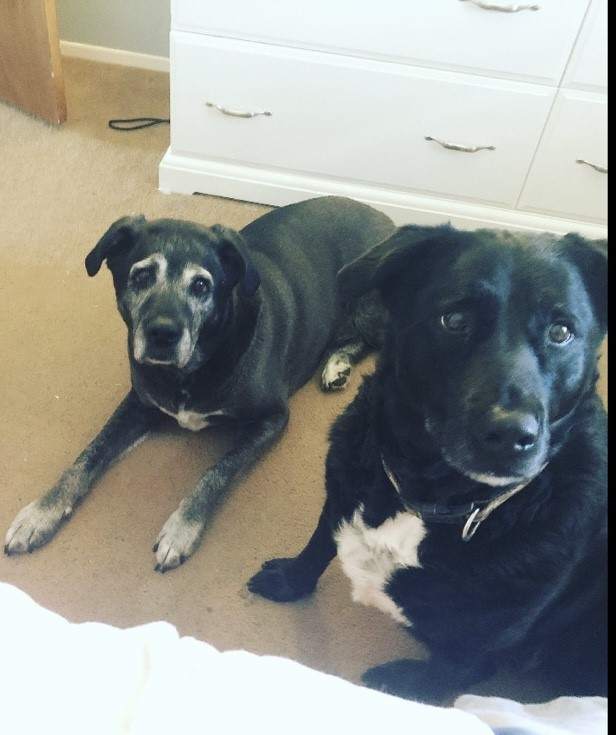
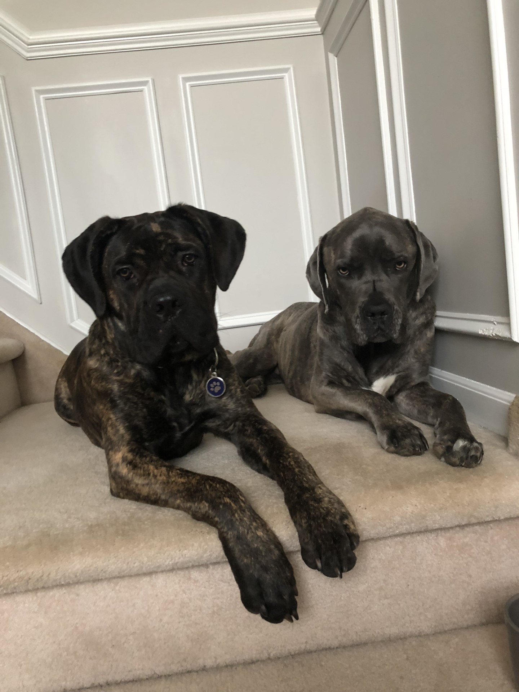

Walk With Wagz
Only The Best for your best Friend
CLIENT TESTIMONIALS

Nikkii has been our reliable dog walker for a while.
Our dogs always get excited the moment she arrives.
Nikkii is reliable, friendly, and easy to contact. I
would recommend her to anyone; she will take great care
of your faithful fur-baby.
Binkley and Bailey

Nikkii looked after Juno & Trixi at our home while we
were away on vacation. The dogs loved her and we felt
happy knowing both our pets and home were in good hands.
Juno & Trixi

Misty is my rescue from Puerto Rico after Hurricane
Maria. She is a little skittish. I had an emergency &
couldn't find someone to take her for Christmas. I
called Walk with wags and Nikkii agreed to take her.
Nikkii quickly won her over because she is a warm loving
person and Misty responded to her gentle nature. I
highly recommend Walk With Wagz.
Misty